library(tidyverse)
penguins <- read_csv("data/penguins.csv")Module 11 · Deeper practice D1–D4
Aesthetic mappings, geoms and layers, with answers
NoteHow to use this page
- Purpose: practice the three ideas from class in more depth. Each exercise is a pattern for one task in Guided Project 11: solve it here on penguins, then repeat the same moves on your own data.
- Task: run the code in Posit Cloud: open
practice/practice_d1-d4.Rin themodule-11-aesproject (or download practice_d1-d4.R) and work section by section. About 15 minutes per exercise. - Success: you can answer each question before you open its answer, and your Modify and Make code draws the plot described.
- Predictions are not graded anywhere. Answers are here so you can check yourself: try first, then open them.
What the measurement columns mean:
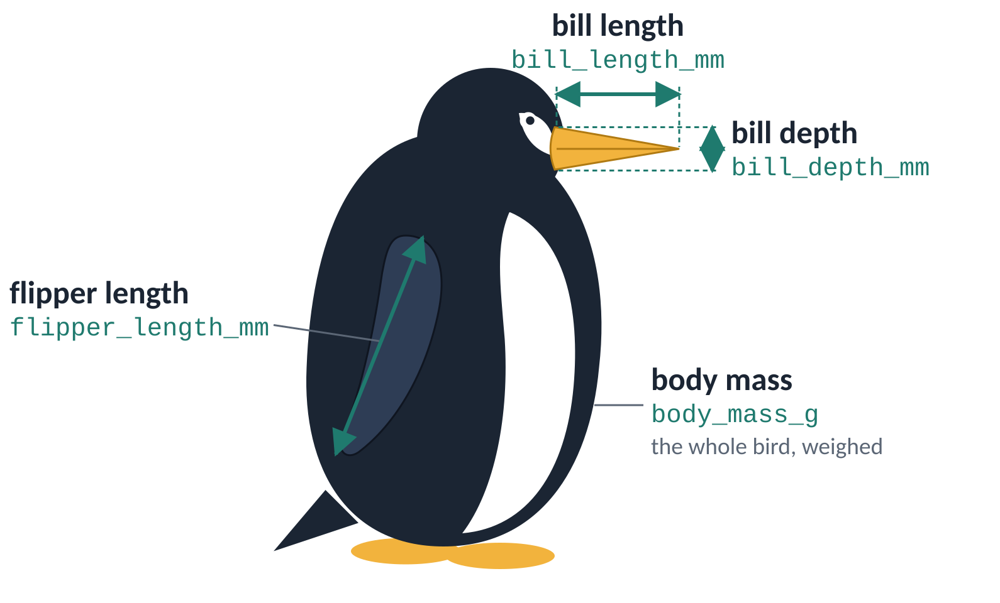
Every exercise starts the same way:
| Exercise | Pattern | Guided Project task | Slides |
|---|---|---|---|
| D1 | Explore a relationship: two numbers, a mapped group, a set alpha |
A1, B1 | Session 1, 7–14 |
| D2 | Amount per group: count() or summarise(), then geom_col() |
A2, B2 | Session 1, 15–16 |
| D3 | Change across time: summarise() by group and time, then geom_line() |
B3 (A3 Credit Card only) | Session 1, 17–19 |
| D4 | A summary layer on the raw data, with labels | A4, B4 | Session 2, 4–10 |
D1 · Explore a relationship
Pattern: two numeric columns on x and y; one categorical column mapped to color (and shape); a fixed alpha when points overlap.
Predict
Bill length and bill depth: when one goes up, does the other go up or down? Will the answer change once each species gets its own color? Write your prediction before running anything.
TipShow answer
Look at the two plots below. Without color, the whole cloud tends to go down: longer bills look shallower. With color, within each species the points go up. The overall trend mixes three groups that sit in different places. Mapping the group to color reveals it.
Run
ggplot(penguins, aes(x = bill_length_mm, y = bill_depth_mm)) +
geom_point()Warning: Removed 2 rows containing missing values or values outside the scale range
(`geom_point()`).
ggplot(penguins, aes(x = bill_length_mm, y = bill_depth_mm,
color = species, shape = species)) +
geom_point()Warning: Removed 2 rows containing missing values or values outside the scale range
(`geom_point()`).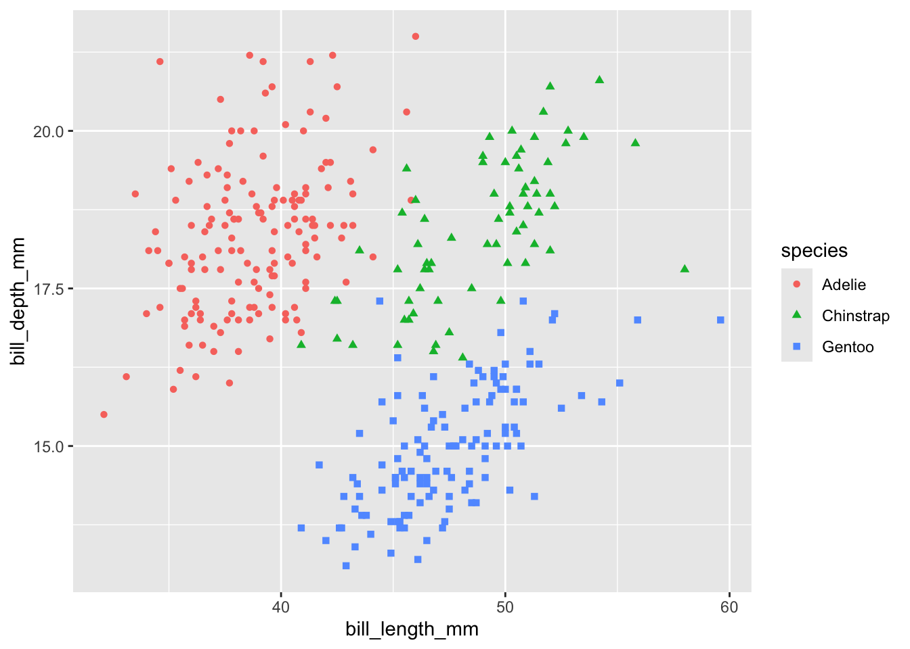
Investigate
- What does one point stand for? What does the warning in the console say, and why?
- Why map species to both color and shape?
- You will set
alpha = 0.4below. Why is alpha set (outsideaes()) and not mapped?
TipShow answers
- One penguin. Rows with a missing bill length or depth have no position, so
geom_point()removes them and says so in the warning. - Two cues for the same column: the plot still reads in grayscale and for readers who do not see color differences (color is never the only cue).
- Transparency here is not information about each penguin; it is one design choice for all points so overlaps show. One value for every mark is a setting.
Modify
Map shape to island and set the transparency of every point to 0.4. Predict first: how many legends will there be?
ggplot(penguins, aes(x = bill_length_mm, y = bill_depth_mm,
color = species, shape = ___)) +
geom_point(alpha = ___)
TipShow solution
ggplot(penguins, aes(x = bill_length_mm, y = bill_depth_mm,
color = species, shape = island)) +
geom_point(alpha = 0.4)Warning: Removed 2 rows containing missing values or values outside the scale range
(`geom_point()`).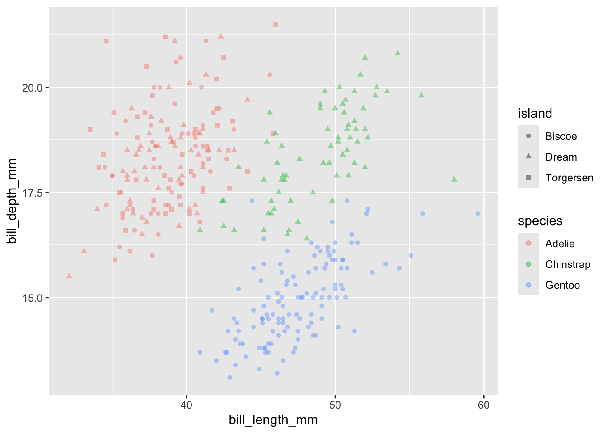
Two legends: one for color (species) and one for shape (island). Alpha has no legend because it is set, not mapped.
Make (choose one)
- Option A (Body size):
flipper_length_mmon x,body_mass_gon y, color mapped tosex. - Option B (Islands):
body_mass_gon x,bill_depth_mmon y, color mapped toisland, alpha set to 0.5.
TipShow solutions
ggplot(penguins, aes(x = flipper_length_mm, y = body_mass_g,
color = sex)) +
geom_point()Warning: Removed 2 rows containing missing values or values outside the scale range
(`geom_point()`).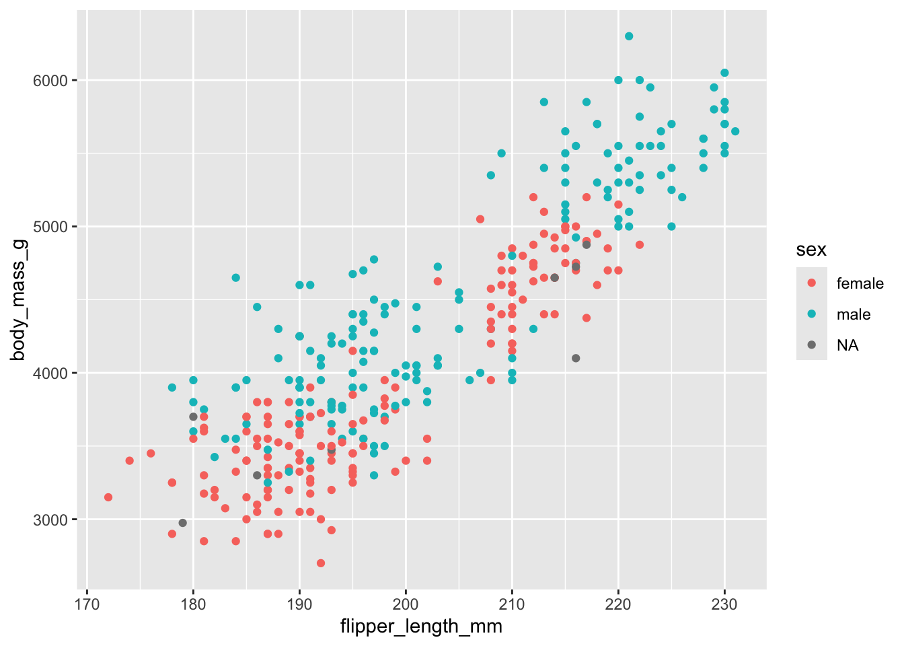
ggplot(penguins, aes(x = body_mass_g, y = bill_depth_mm,
color = island)) +
geom_point(alpha = 0.5)Warning: Removed 2 rows containing missing values or values outside the scale range
(`geom_point()`).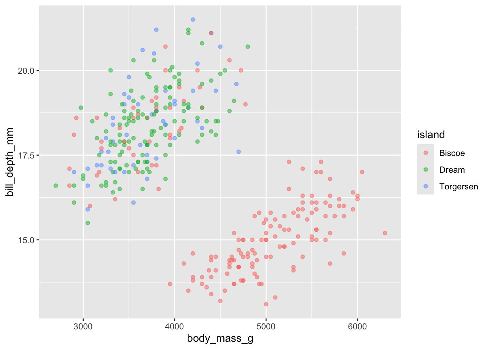
Option A shows a third color for NA: penguins whose sex was not recorded. That is real missing data; D4 Option B shows one way to drop those rows.
ImportantPattern for Guided Project tasks A1 and B1
Choose two numeric columns of your dataset for x and y. Map one categorical column (in Fairness Data: the outcome or a sensitive attribute) to color. Your datasets have thousands of rows, so set alpha. Write first: *each row of my data is one ___*.
D2 · Amount per group
Pattern: make a small table with one row per group (count() or summarise()), then draw it with geom_col().
Predict
penguins %>% count(island) makes a table. How many rows will it have, and how many columns will the plot below have?
TipShow answer
Three rows (Biscoe, Dream, Torgersen), so three columns: one mark per row.
Run
island_counts <- penguins %>% count(island)
island_counts# A tibble: 3 × 2
island n
<chr> <int>
1 Biscoe 168
2 Dream 124
3 Torgersen 52ggplot(island_counts, aes(x = island, y = n)) +
geom_col()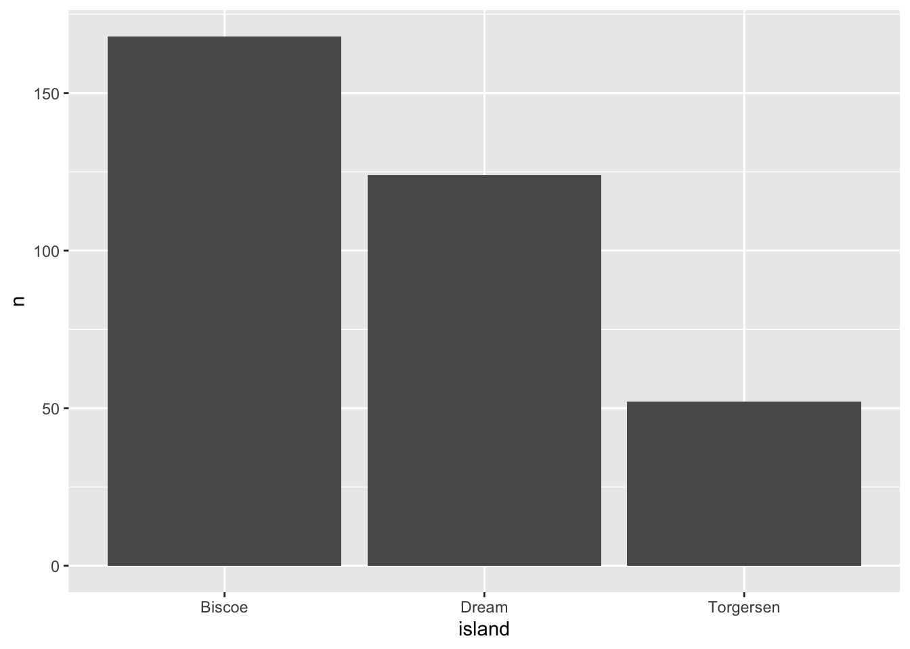
Investigate
- True or false:
geom_col()counts the rows for you. - Run
penguins %>% count(sex). Why are there three rows? What will the plot show for the third one? geom_col()draws any number you computed, not only counts. Which function from Module 5 makes a table of means per group?
TipShow answers
- False.
count()did the counting;geom_col()draws the heights you give it. (geom_bar()counts for you because it computes a statistic: Module 12.) - The third row is
NA: penguins whose sex was not recorded. The plot shows a column labeled NA. Missing values are data too. group_by()+summarise().
Modify
Draw the number of penguins measured in each year.
year_counts <- penguins %>% count(___)
ggplot(year_counts, aes(x = year, y = ___)) +
geom_col()
TipShow solution
year_counts <- penguins %>% count(year)
ggplot(year_counts, aes(x = year, y = n)) +
geom_col()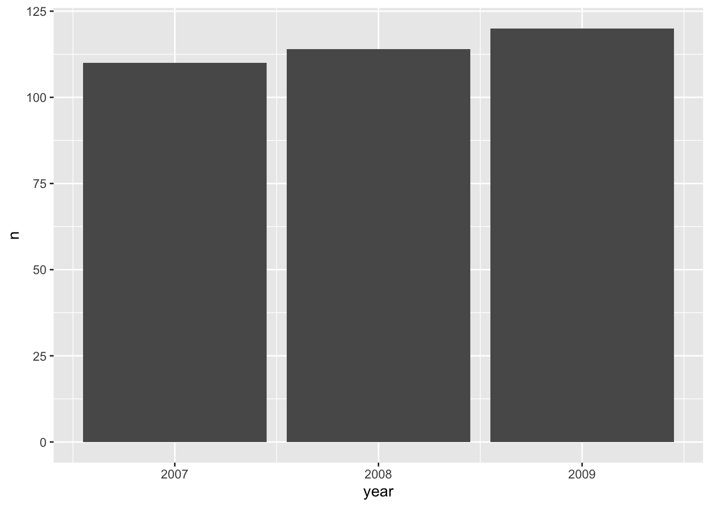
Make (choose one)
- Option A (Sexes): count penguins by
sexand draw the counts. - Option B (Means, not counts): mean
body_mass_gper species withgroup_by()+summarise(), drawn withgeom_col().
TipShow solutions
sex_counts <- penguins %>% count(sex)
ggplot(sex_counts, aes(x = sex, y = n)) +
geom_col()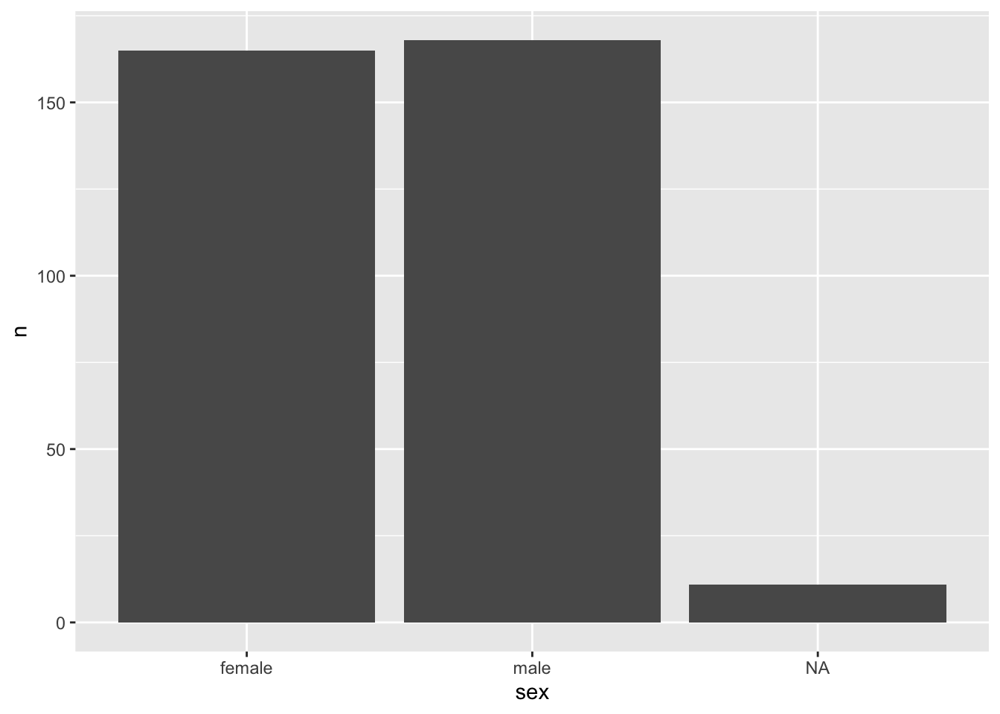
species_mass <- penguins %>%
group_by(species) %>%
summarise(mean_mass = mean(body_mass_g, na.rm = TRUE))
ggplot(species_mass, aes(x = species, y = mean_mass)) +
geom_col()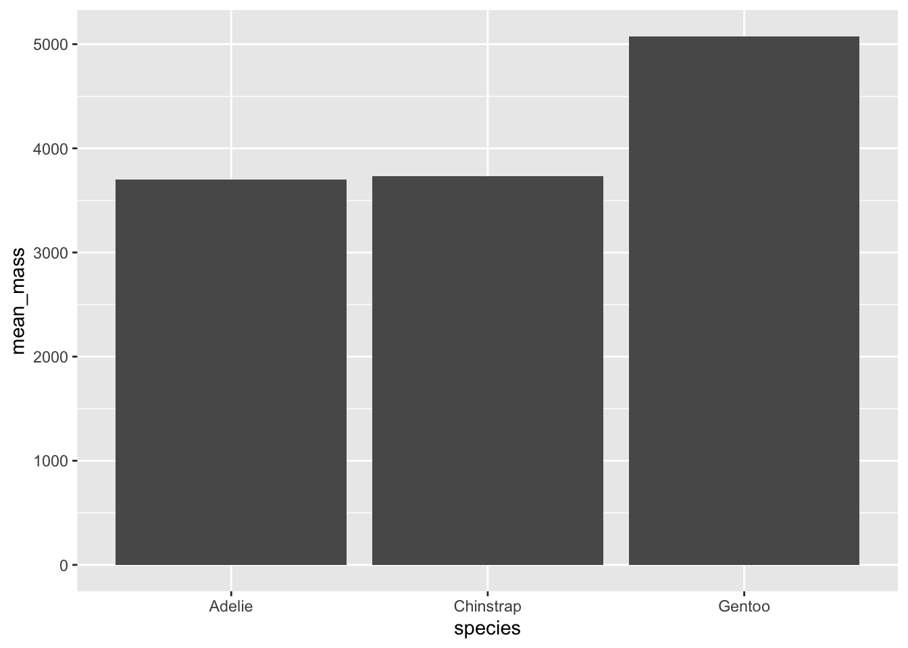
ImportantPattern for Guided Project tasks A2 and B2
Pick one categorical column (an outcome, a sensitive attribute, a team, a position…). count() it, then draw the counts with geom_col(). Before plotting, print the small table: how many rows, so how many columns?
D3 · Change across time
Pattern: summarise() one number per group and time point, then draw one line per group with geom_line().
Predict
penguin_means below has one row per species and year. Will the first plot show one line or three?
TipShow answer
One line that zigzags: nothing tells ggplot2 the rows belong to three species, so it joins all points in order of x and jumps up and down at each year.
Run
penguin_means <- penguins %>%
group_by(species, year) %>%
summarise(mean_mass = mean(body_mass_g, na.rm = TRUE),
.groups = "drop")
penguin_means# A tibble: 9 × 3
species year mean_mass
<chr> <dbl> <dbl>
1 Adelie 2007 3696.
2 Adelie 2008 3742
3 Adelie 2009 3665.
4 Chinstrap 2007 3694.
5 Chinstrap 2008 3800
6 Chinstrap 2009 3725
7 Gentoo 2007 5071.
8 Gentoo 2008 5020.
9 Gentoo 2009 5141.ggplot(penguin_means, aes(x = year, y = mean_mass)) +
geom_line()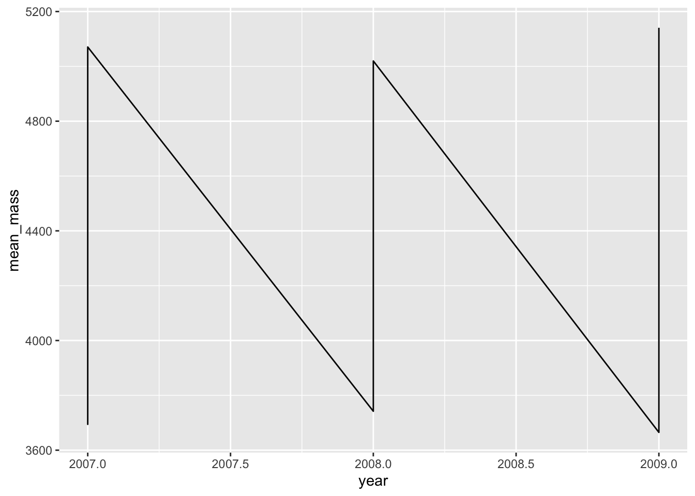
Investigate
- How many rows does
penguin_meanshave? Why that number? - Run both plots below. Which geom follows the order of the rows, and which sorts by x first?
walk <- tibble(step = c(1, 3, 2), place = c(10, 30, 15))
ggplot(walk, aes(x = step, y = place)) + geom_line()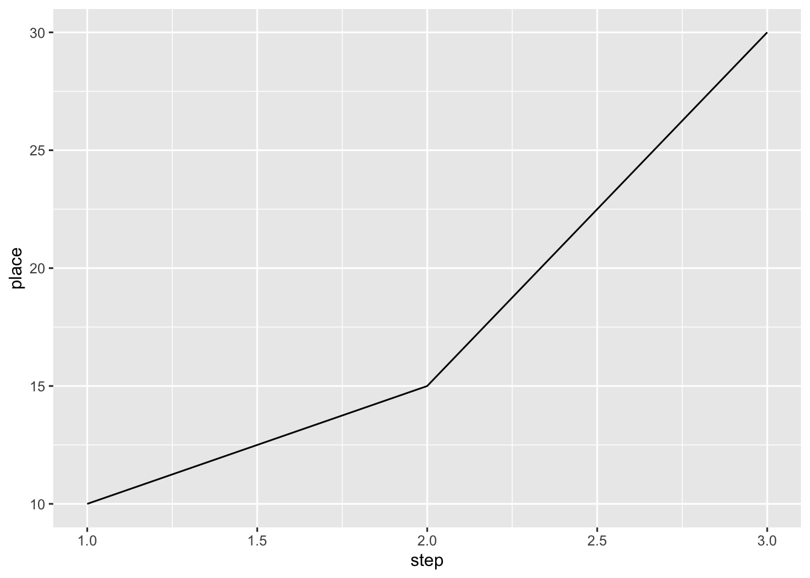
ggplot(walk, aes(x = step, y = place)) + geom_path()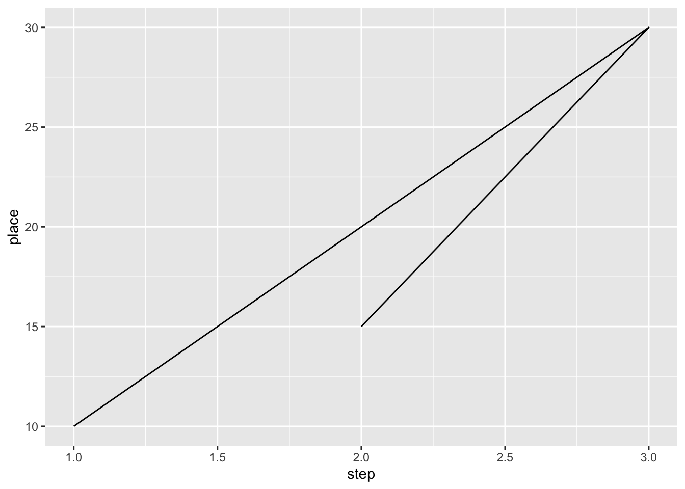
- The x axis shows values like 2007.5. Is that a problem with the data or with the axis?
TipShow answers
- Nine: 3 species × 3 years, one row per combination.
geom_path()follows the row order (1, 3, 2);geom_line()sorts by x (1, 2, 3). Minard’s map is a path: the army’s route, in order.- The axis: ggplot2 chose breaks for a continuous number. Changing breaks is part of scales (Module 13).
Modify
Give each species its own line.
ggplot(penguin_means, aes(x = year, y = mean_mass, color = ___)) +
geom_line()
TipShow solution
ggplot(penguin_means, aes(x = year, y = mean_mass, color = species)) +
geom_line()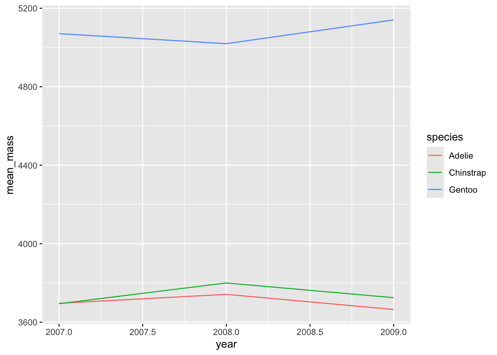
A discrete mapping (color) also makes groups, so there is one line per species. group = species would do the grouping without color.
Make (choose one)
- Option A (Flippers): mean
flipper_length_mmper island and year, one line per island. - Option B (Counts over time):
count(species, year), then one line per species showing how many penguins were measured each year.
TipShow solutions
flipper_means <- penguins %>%
group_by(island, year) %>%
summarise(mean_flipper = mean(flipper_length_mm, na.rm = TRUE),
.groups = "drop")
ggplot(flipper_means, aes(x = year, y = mean_flipper, color = island)) +
geom_line()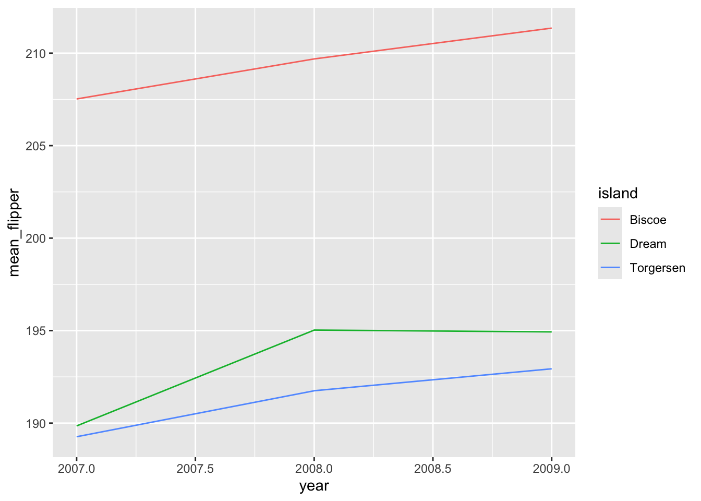
species_year <- penguins %>% count(species, year)
ggplot(species_year, aes(x = year, y = n, color = species)) +
geom_line()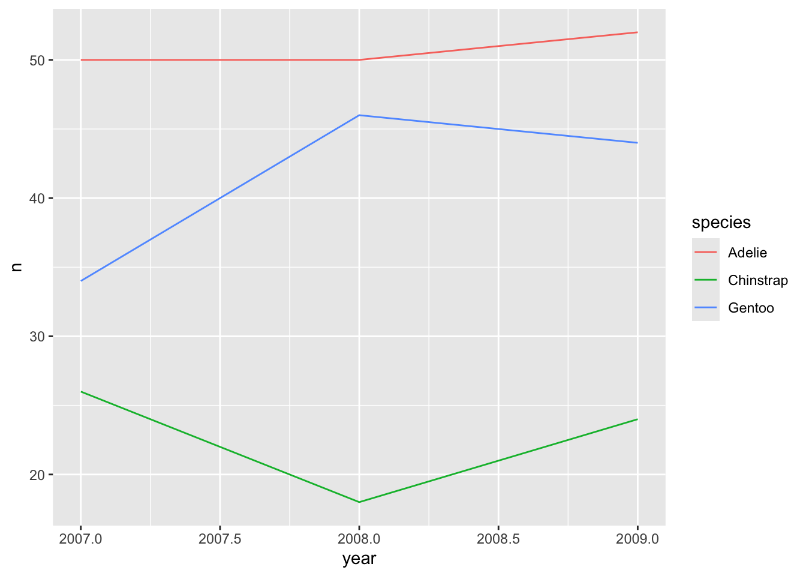
ImportantPattern for Guided Project task B3 (and A3 for Credit Card)
If your data has a time or order column (season, year, game number, round; Credit Card: month), summarise() one number per group and time point, then geom_line() with the group mapped to color. Check the number of rows first: groups × time points.
D4 · A summary layer on the raw data
Pattern: layer 1 shows every row; layer 2 brings its own small table (one row per group) with its own aes(); layer 3 labels it.
Predict
species_centers has columns species, mean_flipper and mean_mass. The second layer below has no aes() of its own. Will it run?
TipShow answer
No. x and y are set in ggplot(), so every layer inherits them. The second layer looks for flipper_length_mm in species_centers, which does not have it.
Run
species_centers <- penguins %>%
group_by(species) %>%
summarise(
mean_flipper = mean(flipper_length_mm, na.rm = TRUE),
mean_mass = mean(body_mass_g, na.rm = TRUE)
)
species_centers# A tibble: 3 × 3
species mean_flipper mean_mass
<chr> <dbl> <dbl>
1 Adelie 190. 3701.
2 Chinstrap 196. 3733.
3 Gentoo 217. 5076.ggplot(penguins, aes(x = flipper_length_mm, y = body_mass_g)) +
geom_point() +
geom_point(data = species_centers, size = 5, shape = 4)Error in `geom_point()`:
! Problem while computing aesthetics.
ℹ Error occurred in the 2nd layer.
Caused by error:
! object 'flipper_length_mm' not foundInvestigate
- Read the error: which column is missing, and in which layer?
- Fix it by giving the second layer its own
aes(x = …, y = …). Which columns go there? - In the plot below,
color = speciesis inggplot(). Are the X marks colored? Why?
ggplot(penguins, aes(x = flipper_length_mm, y = body_mass_g,
color = species)) +
geom_point() +
geom_point(data = species_centers,
aes(x = mean_flipper, y = mean_mass),
size = 5, shape = 4)Warning: Removed 2 rows containing missing values or values outside the scale range
(`geom_point()`).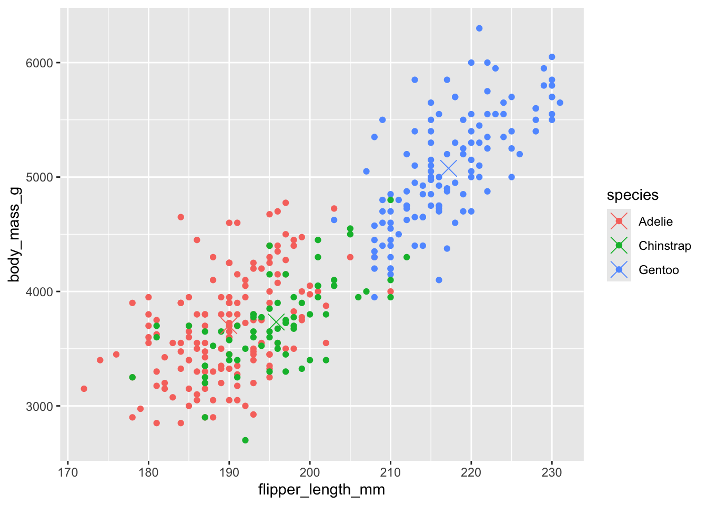
TipShow answers
flipper_length_mm, in the 2nd layer.aes(x = mean_flipper, y = mean_mass): the columns ofspecies_centers.- Yes. A mapping in
ggplot()is global: every layer whose data has aspeciescolumn uses it. Putcolor = speciesinside the firstgeom_point()to make it local to that layer.
Modify
Add a third layer that writes each species’ name above its center.
ggplot(penguins, aes(x = flipper_length_mm, y = body_mass_g)) +
geom_point(aes(color = species), alpha = 0.6) +
geom_point(data = species_centers,
aes(x = mean_flipper, y = mean_mass),
size = 5, shape = 4) +
geom_text(data = ___,
aes(x = mean_flipper, y = mean_mass, label = ___),
vjust = -1.2)
TipShow solution
ggplot(penguins, aes(x = flipper_length_mm, y = body_mass_g)) +
geom_point(aes(color = species), alpha = 0.6) +
geom_point(data = species_centers,
aes(x = mean_flipper, y = mean_mass),
size = 5, shape = 4) +
geom_text(data = species_centers,
aes(x = mean_flipper, y = mean_mass, label = species),
vjust = -1.2)Warning: Removed 2 rows containing missing values or values outside the scale range
(`geom_point()`).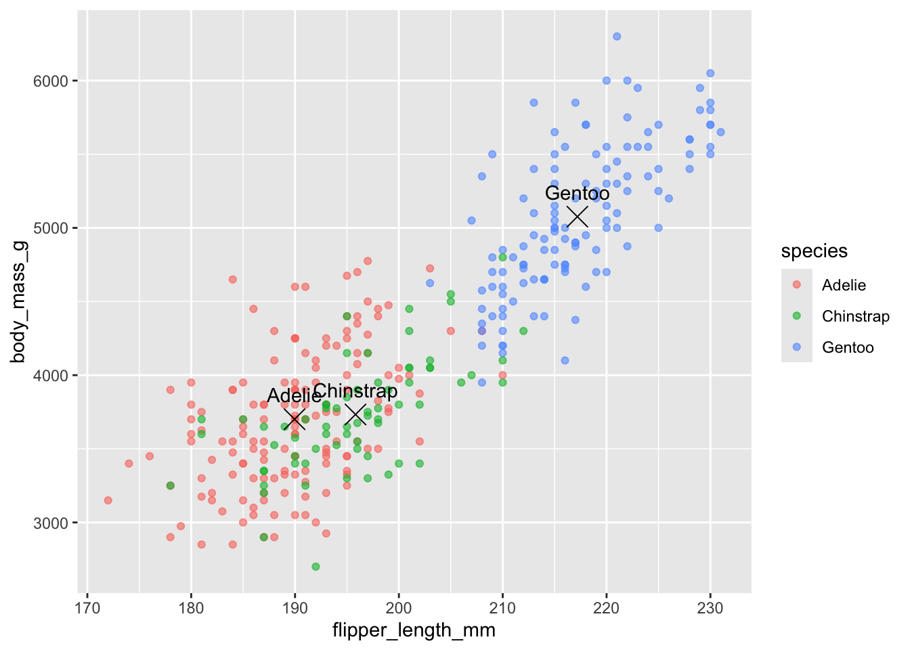
Make (choose one)
- Option A (Islands): a scatter of
bill_length_mmandbill_depth_mmcolored by island, with each island’s mean bill length and depth as a large X and its name as a label. - Option B (Sexes): a scatter of
flipper_length_mmandbody_mass_gcolored by sex, with a large X at the mean of each sex. Hint: drop the penguins with no recorded sex first, withfilter(!is.na(sex)).
TipShow solutions
island_centers <- penguins %>%
group_by(island) %>%
summarise(
mean_length = mean(bill_length_mm, na.rm = TRUE),
mean_depth = mean(bill_depth_mm, na.rm = TRUE)
)
ggplot(penguins, aes(x = bill_length_mm, y = bill_depth_mm)) +
geom_point(aes(color = island), alpha = 0.6) +
geom_point(data = island_centers,
aes(x = mean_length, y = mean_depth),
size = 5, shape = 4) +
geom_text(data = island_centers,
aes(x = mean_length, y = mean_depth, label = island),
vjust = -1.2)Warning: Removed 2 rows containing missing values or values outside the scale range
(`geom_point()`).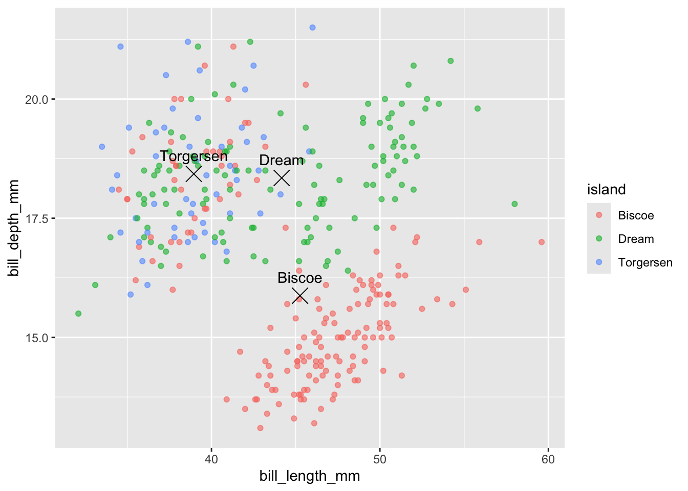
penguins_sexed <- penguins %>% filter(!is.na(sex))
sex_centers <- penguins_sexed %>%
group_by(sex) %>%
summarise(
mean_flipper = mean(flipper_length_mm, na.rm = TRUE),
mean_mass = mean(body_mass_g, na.rm = TRUE)
)
ggplot(penguins_sexed, aes(x = flipper_length_mm, y = body_mass_g)) +
geom_point(aes(color = sex), alpha = 0.6) +
geom_point(data = sex_centers,
aes(x = mean_flipper, y = mean_mass),
size = 5, shape = 4)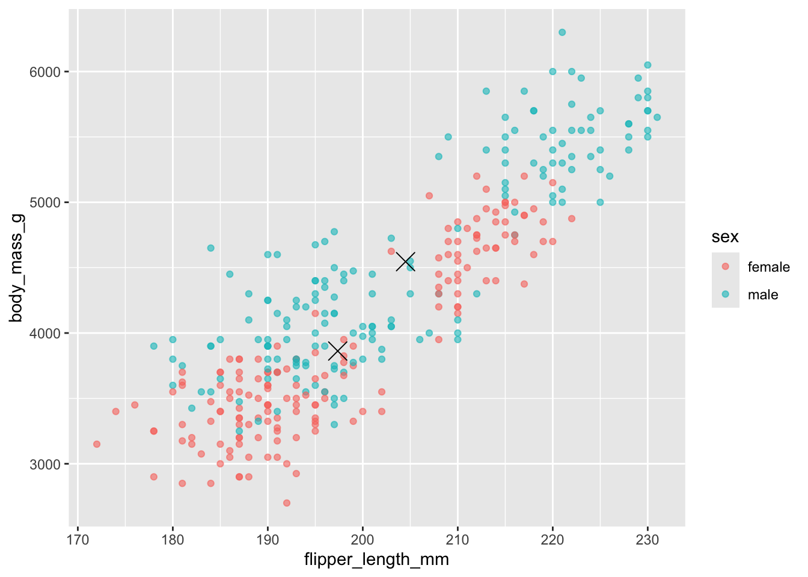
ImportantPattern for Guided Project tasks A4 and B4
Layer 1: your scatter from A1/B1. Layer 2: a small table of group means (group_by() + summarise()) with its own aes(). Layer 3: geom_text() labels. In Fairness Data, check your dataset card first: a group with fewer than 30 rows gives an unreliable mean. Say so in your notes.
Data: Palmer Penguins (Horst, Hill & Gorman), CC0. Reference: Wickham, Navarro & Pedersen, ggplot2 (3e), chapters 2, 3 and 13.